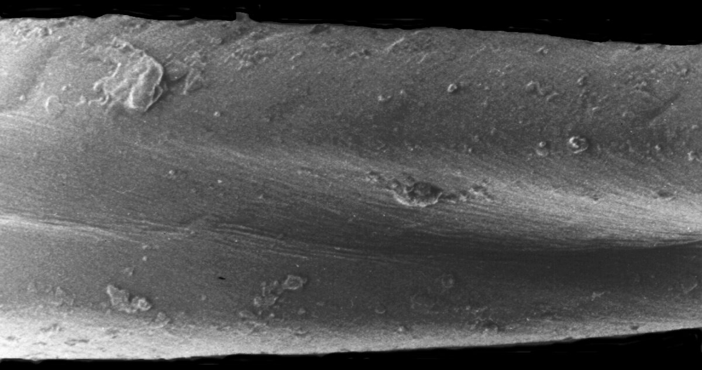
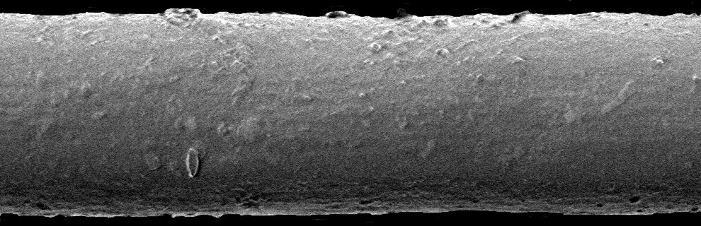
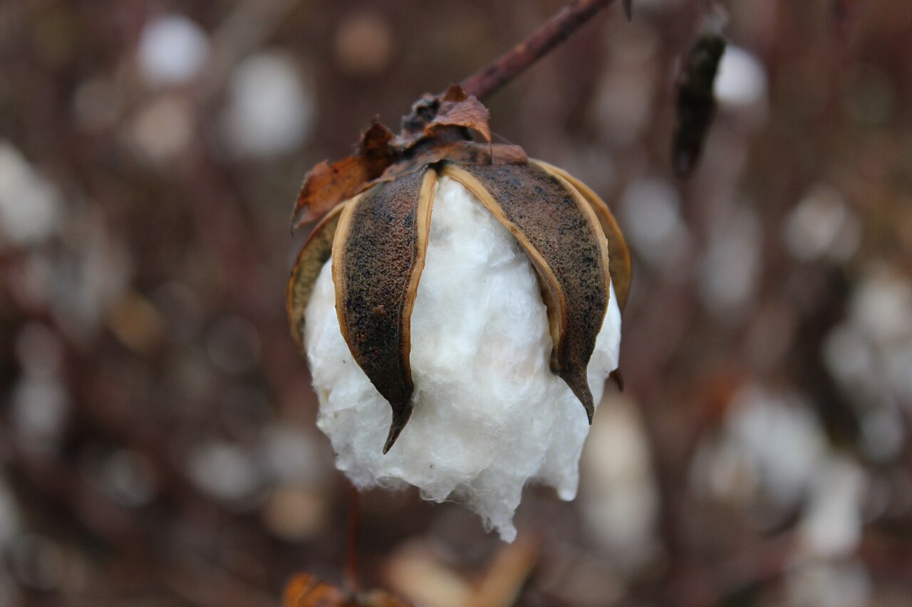
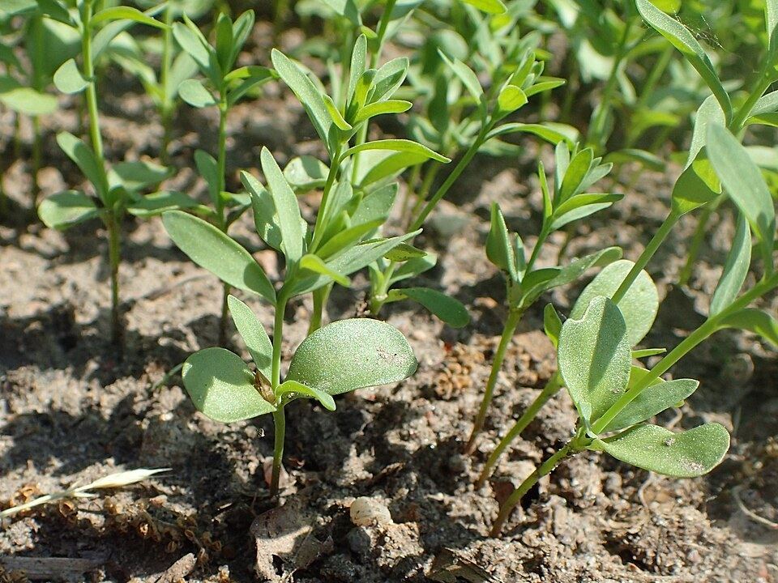
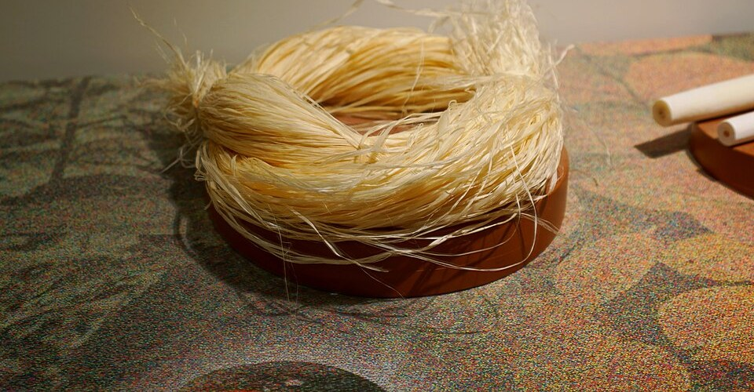
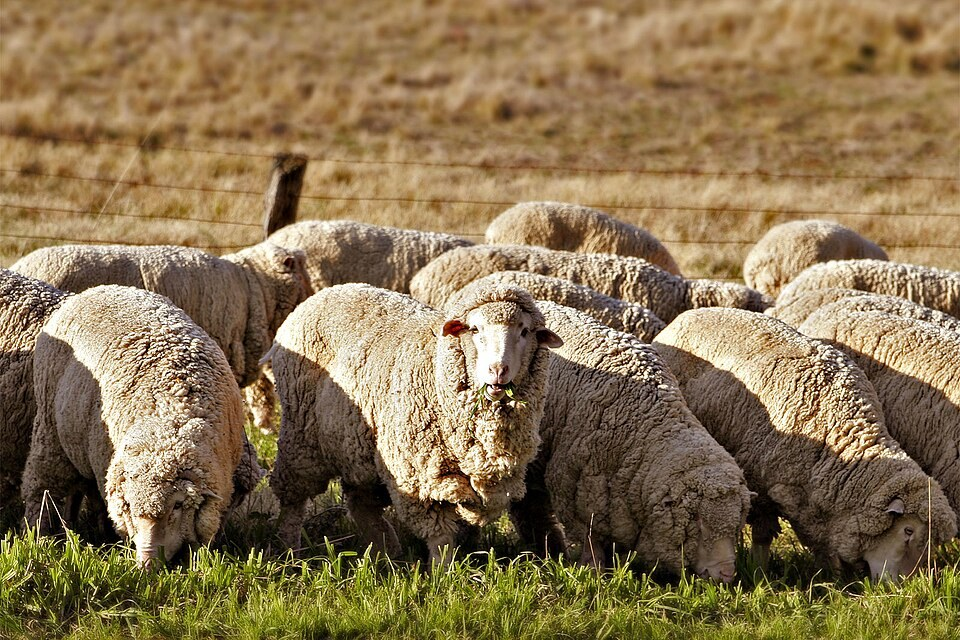
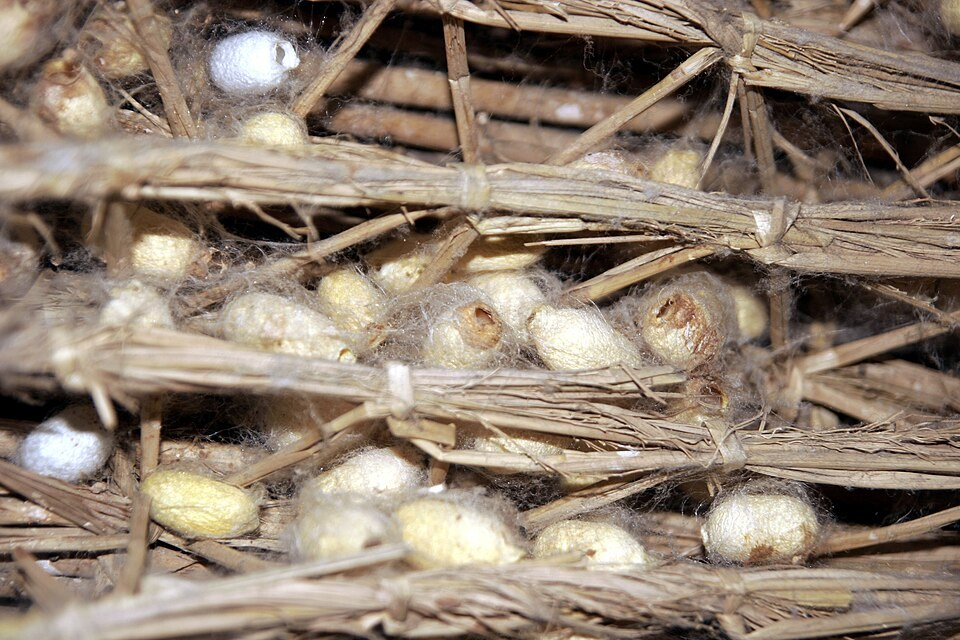

교육자료 · 섬유
옷 재료가 무엇인지. 쉬운 말로 세 그룹: 천연(자연에서), 재생(자연 원료 가공), 합성(석유 기반). 티에 자주 나오는 이름만.
섬유 세 갈래: 천연(자연에서 그대로: 목화·양) · 재생(나무 펄프를 녹여 다시 뽑음) · 합성(석유 원료를 녹여 뽑음). 실물 사진은 아래 면·폴리 현미경 사진과 식물·양·고치 사진.


분류: 천연 — 면(목화) · 울(양) · 실크(누에고치) · 린넨(아마) · 모시. 재생 — 나무 → 비스코스·모달·리오셀. 합성 — 폴리·CDP·나일론·스판.

먼저 쉬운 말 세 그룹. 배합 비율·레시피는 작지.
1. 천연 (Natural) — 자연에서 얻는 섬유
식물에서 오는 재료. 티 본체에 가장 많음.
이름: cotton · 현장: 코튼·면
동물 모. 니트 티보다 스웨터·아우터. 티 본체에서는 드물.
견. 고급·트림. 티셔츠 본체 기본 라인에서는 드물.
2. 재생 (Regenerated) — 자연 원료를 가공해 재생
셀룰로오스 재생. 드레이프·흡수. 블렌드·싱글 원단에도.
비스코스 계 개량. 소프트·수축 안정 쪽 공개 설명 많음.
나무 펄프를 용매에 녹여 다시 뽑은 셀룰로오스 섬유. 작지에는 일반명 리오셀로 적는다.
3. 합성 (Synthetic) — 석유 기반 합성
레귤러 PET. 강도·속건. 블렌드(C/P)·헤더에 흔하다. 염료: 디스퍼스.
폴리아마이드. 강도·마모. 티 본체보다 트림·특수 원단. 염료: 산성.
스팬덱스. 스판. 플레이팅·블렌드로 신축성. 현장: 스판·스팬.
Cationic Dyeable Polyester. 레귤러 PET와 다른 염료(카티온). 헤더·특수 원단 예.
섬유 재료는 실·원단·편직물·부직포를 만드는 첫 원료다. 아무 가는 물질이나 섬유가 되지는 않는다. 아래 조건을 갖춰야 실로 쓸 수 있다.
꼬아서 실을 만들려면 일정 길이 이상이 필요하다. 면·울처럼 짧은 섬유는 단섬유(스테이플), 실크·폴리처럼 길게 이어진 섬유는 장섬유(필라멘트)라고 한다.
당겨도 쉽게 끊어지지 않는 힘(강도)이 있어야 방적·편직·봉제를 견딘다.
구부려도 부러지지 않는 성질(굽힘성)과 조금 늘어나는 성질(신도)이 있어야 옷이 된다.
지금은 생산량으로 보면 합성섬유가 천연섬유보다 훨씬 많다. 옷뿐 아니라 산업용으로도 많이 쓰기 때문이다.
섬유는 긴 사슬 분자(고분자, polymer)로 되어 있다. 사슬이 가지런히 모인 곳과 흐트러진 곳이 섞여 있다.
섬유 속 사슬: 가지런히 모인 부분(결정 영역)은 단단하고 물·염료가 덜 들어간다. 흐트러진 부분(비결정 영역)으로 물과 염료가 들어간다.
사슬이 빽빽하다. 섬유의 힘(강도)을 맡는다. 물이나 염료가 잘 못 들어간다.
사슬 사이가 느슨하다. 휘고 늘어나는 성질을 준다. 염료는 주로 이 틈으로 들어간다. 자세한 것은 염색 페이지.
합성섬유는 처음에 길게 뽑는다(필라멘트). 면처럼 방적하려면 일정한 길이로 잘라 단섬유로 만든다.
목화 씨앗에 붙은 털이다. 물을 잘 빨고 입기 편하다. 빨래도 쉽다. 티셔츠·속옷·타월·데님 등에 두루 쓴다.
구김이 잘 가고 줄어들기 쉽다. 그래서 폴리 등과 섞어 쓰는 경우가 많다.
아마 줄기 껍질 안쪽에서 얻는다(인피 섬유). 옷감으로 가장 오래된 섬유 가운데 하나다. 질기고 광택이 있고 시원하다. 여름 옷·테이블보·손수건에 쓴다. 구김이 잘 가서 수지 가공으로 보완하기도 한다.
흔히 모시라고 부르는 섬유다. 한산 모시가 유명하다. 빳빳하고 시원하다. 마 종류는 대체로 값이 높고 구김이 잘 간다.
대마(삼베)는 질기다. 황마는 거칠어서 마대·포장재에 많이 쓴다.
나무 열매 속 솜이다. 아주 가볍고 속이 비어 있다. 실로 꼬기는 어려워 충전재로 주로 쓴다.


양털이다. 따뜻하고 탄력이 좋아 구김이 덜 간다. 겨울 외투·스웨터·목도리·카펫에 쓴다.
값이 높다. 겉에 비늘(스케일)이 있어 물에 비비면 엉겨 줄어든다(펠트 수축). 드라이클리닝이나 케어 라벨대로 빤다. 열·햇빛에 누렇게 변하고 벌레에 약해 보관도 주의한다.
알파카·라마(낙타과), 낙타털, 앙고라(토끼털), 모헤어·캐시미어(염소털) 등이 있다. 대개 양모보다 귀하고 값이 높다.
누에고치에서 뽑은 긴 실이다. 천연섬유 가운데 유일한 장섬유다. 매끈한 광택과 촉감이 좋고 색이 곱게 난다. 값이 높고 물·땀에 약해 관리가 어렵다. 블라우스·스카프와 수술용 실에도 쓴다.


석유 원료로 사슬 분자를 만드는 방법에 따라 나눈다. 이름은 몰라도 된다. 섬유 이름과 성질이 중요하다.
가장 많이 쓰는 합성섬유다. 물을 적게 먹고 빨리 마른다. 질기고 구김이 잘 안 간다. 빨래가 쉽다. 기름과 친해서 기름때가 잘 묻는다.
아주 질기고 색이 잘 난다. 정전기와 보풀이 잘 생긴다. 햇빛에 누렇게 변하기 쉬워 흰색은 주의한다.
따뜻하고 부드러워 양모와 비슷하다. 양모와 섞어 쓰는 경우가 많다. 햇빛에 강하다. 열에 약해 다림질을 조심한다. 보풀이 잘 생긴다. 값은 양모보다 훨씬 싸다.
아주 가볍고 물을 거의 안 먹어 빨리 마른다. 여름 기능성 옷 안쪽 면에 쓰기도 한다. 염색이 어렵고 햇빛에 약해 옷에는 제한적으로 쓴다. 카펫·로프 등 산업용이 많다.
고무처럼 잘 늘었다가 돌아온다. 고무보다 가늘고 튼튼하며 염색도 된다. 주로 다른 섬유에 조금 섞어 쓴다. 열에 약하고 오래 쓰면 탄성이 줄어든다.
나무 펄프(셀룰로스)에 약품을 결합해 만든다. 비스코스처럼 다시 셀룰로스로 되돌린 재생섬유와 달라서 반합성섬유라고 부른다. 광택이 좋아 안감에 많이 쓴다.
비스코스·큐프라·모달은 나무 펄프를 녹였다가 다시 섬유로 뽑는다. 촉감이 좋아 인조 실크라고도 불렀다. 만들 때 쓰는 약품 때문에 환경 관리가 중요한 공정이다. 모달은 비스코스의 젖었을 때 약한 점을 보완해 더 질기고 모양이 잘 유지된다.
모달도 나무 펄프로 만든 재생섬유다. 주로 너도밤나무 펄프를 쓴다. 섬유를 뽑을 때 길게 당겨(연신) 사슬을 가지런히 만든다. 그래서 보통 비스코스보다 젖었을 때 힘이 덜 떨어지고, 빨아도 모양이 덜 변한다. 부드러워 속옷·티셔츠에 면과 섞어 쓴다.
| 섬유 | 좋은 점 | 조심할 점 | 자주 쓰는 곳 |
|---|---|---|---|
| 면 | 흡수, 착용감, 빨래 쉬움 | 구김, 수축 | 티셔츠, 속옷, 타월 |
| 아마(린넨) | 질김, 광택, 시원함 | 구김, 값 | 여름 옷, 테이블보 |
| 양모 | 보온, 탄력 | 펠트 수축, 벌레, 값 | 외투, 스웨터 |
| 실크 | 광택, 촉감, 발색 | 물·땀에 약함, 값 | 블라우스, 스카프 |
| 폴리에스터 | 질김, 속건, 구김 적음 | 기름때 | 거의 모든 옷 |
| 나일론 | 아주 질김, 발색 | 정전기, 보풀, 황변 | 아우터, 스타킹 |
| 아크릴 | 보온, 가벼움 | 열, 보풀 | 니트, 담요 |
| 폴리프로필렌 | 가벼움, 속건 | 염색 어려움, 햇빛 | 기능성 안감, 산업용 |
| 스판덱스 | 신축, 회복 | 열, 노화 | 스판 원단, 운동복 |
이 표는 일반적인 성질이다. 실제 원단의 성질은 배합·가공에 따라 달라진다. 작지를 본다.
작지·원단명에 자주 나오는 표기. 비율은 작지.
빗질(코밍)로 짧은 섬유를 걸러 낸 면. 카드사보다 잔털이 적고 고르다. 현장: 코마·CM.
Cotton/Polyester 블렌드. 비율은 작지마다 다르다.
편직 시 스판(엘라스테인)을 플레이팅. 신축성. 편직 페이지를 본다.
CDP 계 폴리를 헤더·리브 등에. 카티온 염료. 레귤러 P와 섞어 쓰지 않는다.
티셔츠 원단에는 면과 폴리를 섞은 원단이 많다. 어느 쪽이 더 많은지에 따라 부르는 말이 다르다.
면이 50% 이상인 면·폴리 혼방이다. 면의 촉감에 폴리의 덜 줄어듦·빠른 건조를 더한다.
폴리가 더 많은 혼방이다. 질기고 구김이 덜 가지만 면보다 덜 시원하다.
같은 CVC라도 비율이 여러 가지다. 이름만 보고 비율을 짐작하지 말고 작지의 % 표기를 본다. 염색도 두 섬유를 따로 생각한다(염색 페이지 온도표의 C/P 줄).
다 쓴 페트병이나 폴리 제품을 잘게 부수어 녹이거나, 화학적으로 원료 상태로 되돌려 다시 뽑은 폴리에스터다.
섬유 자체는 폴리에스터라서 염료(분산)와 다루는 법이 일반 폴리와 같다. 다만 원료 상태에 따라 색·품질 차이가 날 수 있어 로트 관리가 중요하다.
자투리 원단·헌 옷을 풀어 다시 솜으로 만든다. 풀면서 섬유가 짧아져서 대개 새 면이나 폴리와 섞어 쓴다.
“리사이클”이라고 적으려면 바이어가 요구하는 인증·증빙 서류가 따라와야 한다. 작지와 바이어 요구를 본다.
실 몇 가닥을 핀셋으로 잡고 불에 대 본다. 불꽃·냄새·재로 대략 어떤 섬유인지 안다. 혼방은 결과가 섞여서 정확하지 않다. 확인용 보조 방법일 뿐이고, 정확한 판정은 시험소 분석을 따른다.
| 섬유 | 타는 모습 | 냄새 | 남는 것 |
|---|---|---|---|
| 면 · 린넨 · 레이온 | 빨리 타고 불을 떼도 계속 탄다 | 종이 탄 냄새 | 부드럽고 가벼운 재 |
| 양모 · 실크 | 천천히 타고 불을 떼면 잘 꺼진다 | 머리카락 탄 냄새 | 손으로 부서지는 검은 덩어리 |
| 폴리에스터 | 녹으면서 그을음 많은 불꽃, 잘 꺼진다 | 달큰한 냄새 | 딱딱한 검은 구슬 |
| 나일론 | 먼저 줄어들며 녹고 탄다 | 셀러리 같은 냄새, 플라스틱 탄 냄새 | 회갈색 딱딱한 구슬 |
| 아세테이트 | 빨리 타며 녹는다 | 식초 같은 냄새 | 딱딱한 검은 구슬 |
| 아크릴 | 녹으면서 그을음 내며 잘 탄다 | 시큼한 냄새 | 딱딱한 덩어리 |
불을 쓰는 시험이다. 불에 타는 물건이 없는 곳에서 소량으로만 하고, 녹은 합성섬유는 뜨거우니 만지지 않는다.
참고: CVC 정의가 나온 논문 · 페트병 재활용(위키백과 영문) · 섬유 연소 시험표 · 캐나다 보존연구소 섬유 구별 노트
섬유→염료 짧은 표. 세부는 염색 페이지.
| 섬유 | 염료(교육말) | 메모 |
|---|---|---|
| 면 (cotton) | 리액티브 reactive | 셀룰로오스 계 |
| P / 레귤러 PET | 디스퍼스 disperse | 합성 폴리 |
| CDP | 카티온 cationic | 가염 폴리 — 디스퍼스가 아니다 |
| 나일론 | 산성 acid | 폴리아마이드 |
CDP≠레귤러 PET. 염료를 바꾸면 색이 안 옮겨지거나 견뢰도가 무너짐.
쉬운 말 먼저. 작지에는 현장말, 바이어·교육 자료에는 교육말이 같이 나온다.
| 현장말 | 교육말 | 메모 | 어디 |
|---|---|---|---|
| 면·코튼 | cotton | 천연 | 원단명 |
| 코마·CM | combed cotton | 빗질 면 | 작지 |
| P·폴리·PET | polyester | 레귤러 | 원단명 |
| 카티온P·CDP | cationic dyeable polyester | 염료 다름 | 헤더·특수 |
| 스판·스팬덱스 | elastane / spandex | 신축 | 플레이팅 |
| C/P·씨피 | cotton/poly blend | 비율=작지 | 원단명 |
| 비스·레이온 | viscose | 재생 | 원단명 |
| 리오셀·모달 | lyocell / modal | 재생 셀룰로오스. 일반명으로 적는다 | 스펙 |
| 디아·분산 | disperse | P용 | 염색 |
| 카치온·카티온 | cationic | CDP용 | 염색 |
교육용 영상은 이 페이지에 아직 없다.
이 페이지 숫자로 공장 규격을 정하지 않는다. 작지·바이어 스펙을 본다.
면은 식물 천연 섬유.
자연 원료를 가공해 재생한 섬유.
레귤러 PET → 디스퍼스. CDP만 카티온.
CDP = Cationic Dyeable Polyester → 카티온.
CM = combed / 코마면.
Cotton/Polyester. 비율은 작지마다 다르다.
편직에서 스판을 플레이팅해 신축성.
나일론(폴리아마이드) → 산성 염료.
리오셀·모달은 재생 셀룰로오스 계열이다. 작지에는 일반명으로 적는다.
업계 일반 분류이다. 배합·비율은 작지.
결정 영역은 강도, 비결정 영역은 휘는 성질과 염료가 들어갈 틈을 준다.
양모 겉의 비늘(스케일)이 서로 걸려 엉킨다. 케어 라벨대로 빤다.
모시 = 저마. 린넨 = 아마. 황마는 마대용이 많다.
CVC = 면이 더 많은 혼방. TC = 폴리가 더 많은 혼방. 비율은 작지.
면은 종이 재, 양모는 부서지는 덩어리, 합성은 녹은 딱딱한 구슬. 혼방은 정확하지 않다.